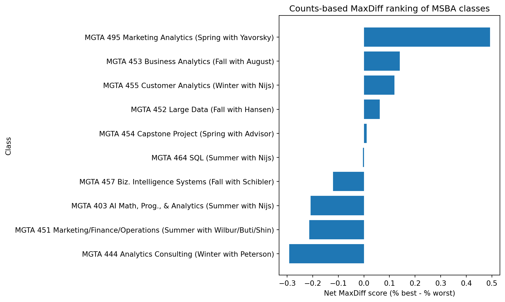
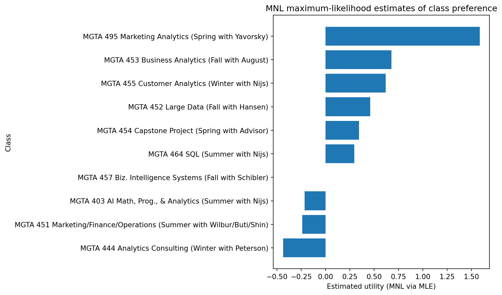
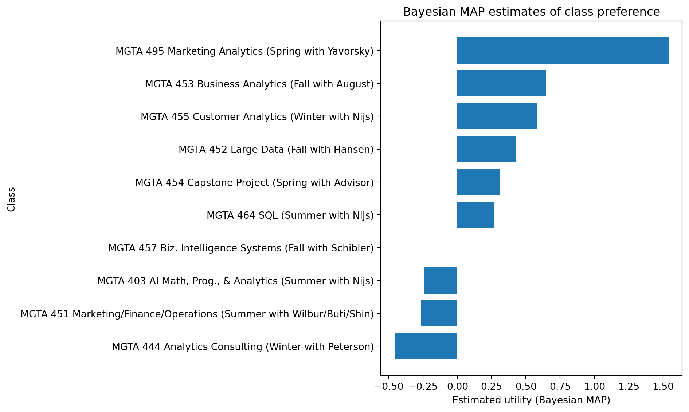

| Item | Label | times_shown | times_best | times_worst | pct_best | pct_worst | score | |
|---|---|---|---|---|---|---|---|---|
| 0 | 9 | MGTA 495 Marketing Analytics (Spring with Yavo... | 274 | 147 | 12 | 0.536496 | 0.043796 | 0.492701 |
| 1 | 5 | MGTA 453 Business Analytics (Fall with August) | 270 | 93 | 55 | 0.344444 | 0.203704 | 0.140741 |
| 2 | 7 | MGTA 455 Customer Analytics (Winter with Nijs) | 276 | 104 | 71 | 0.376812 | 0.257246 | 0.119565 |
| 3 | 4 | MGTA 452 Large Data (Fall with Hansen) | 276 | 77 | 60 | 0.278986 | 0.217391 | 0.061594 |
| 4 | 8 | MGTA 454 Capstone Project (Spring with Advisor) | 272 | 72 | 69 | 0.264706 | 0.253676 | 0.011029 |
| 5 | 2 | MGTA 464 SQL (Summer with Nijs) | 274 | 55 | 56 | 0.200730 | 0.204380 | -0.003650 |
| 6 | 10 | MGTA 457 Biz. Intelligence Systems (Fall with ... | 266 | 23 | 55 | 0.086466 | 0.206767 | -0.120301 |
| 7 | 1 | MGTA 403 AI Math, Prog., & Analytics (Summer w... | 273 | 33 | 90 | 0.120879 | 0.329670 | -0.208791 |
| 8 | 3 | MGTA 451 Marketing/Finance/Operations (Summer ... | 272 | 43 | 101 | 0.158088 | 0.371324 | -0.213235 |
| 9 | 6 | MGTA 444 Analytics Consulting (Winter with Pet... | 267 | 33 | 111 | 0.123596 | 0.415730 | -0.292135 |
HW4-MaxDiff Analysis of MSBA Class Preferences
Counts, MLE, and Bayesian estimation of the MNL model
Introduction
MaxDiff, or Best-Worst Scaling, is a survey method for measuring relative preferences across a set of items. On each screen, respondents see a small subset of items and identify the one they like most and the one they like least. Repeating this over many screens produces data that are much more informative than simple rating scales, because respondents are forced to make trade-offs rather than assigning similar scores to many items.
In this assignment, I analyze MaxDiff responses about 10 core MSBA classes. I begin with a simple counts-based summary using net best-minus-worst scores, then estimate a multinomial logit (MNL) model by maximum likelihood, and finally compare those estimates with a Bayesian MAP version of the same model. The goal is to see how the three approaches differ and whether they lead to the same substantive ranking of class preferences.
The Data
The raw MaxDiff file records one row per item shown on a respondent-task screen. Each row identifies the respondent, the task number, the position of the item on the screen, the item shown, and whether that item was selected as best, worst, or neither. The item-label file maps numeric item codes to the corresponding MSBA class names.
One complication is that the raw file contains two kinds of tasks. Tasks 1 through 8 follow the standard MaxDiff format with 4 items shown per screen, while later tasks contain only 2 items and include an additional item code not present in the class-label file. Because the assignment is framed around the 10 core classes and 4-item MaxDiff screens, I restrict the analysis to Tasks 1–8, which yields a clean 10-item MaxDiff dataset.
After this restriction, the study contains 85 respondents, each completing 8 tasks with 4 items per task, for a total of 10 classes in the analysis. A sanity check confirms that every task contains exactly one best choice, one worst choice, and two unselected items. Exposure counts are also roughly balanced across classes, which is what we would expect from a well-constructed MaxDiff design.
Counts Analysis
As a simple aggregate summary, I first compute how often each class is selected as best and as worst across all screens in which it appears. Following the basic MaxDiff summary introduced in class, I then calculate a net score equal to the percentage of times an item is chosen best minus the percentage of times it is chosen worst. This measure is easy to interpret, though it is still only a descriptive summary rather than a full statistical model.

The counts-based analysis provides a simple descriptive ranking of the 10 MSBA classes. MGTA 495 Marketing Analytics stands out as the most preferred class by a wide margin, with the highest net best-minus-worst score in the dataset. MGTA 453 Business Analytics and MGTA 455 Customer Analytics also have positive net scores, suggesting that they are chosen as best more often than as worst.
At the other end of the ranking, MGTA 444 Analytics Consulting has the lowest net score, followed by MGTA 451 Marketing/Finance/Operations and MGTA 403 AI Math, Prog., & Analytics. These classes are selected as worst more often than best in the aggregate data. Some classes, such as MGTA 454 Capstone Project and MGTA 464 SQL, lie close to zero, indicating relatively balanced best and worst selection rates.
This counts-based approach is intuitive and useful as a first summary, but it is still limited. It treats the net best-minus-worst score as the final answer and does not account for the full multinomial choice structure of the MaxDiff tasks. To move from descriptive summaries to a model-based estimate of latent class preference, the next step is to convert each MaxDiff screen into a set of choice observations for the multinomial logit model.
From MaxDiff Data to MNL Choices
To estimate a multinomial logit model, I need to reorganize the MaxDiff data into choice-format observations. Each respondent-task screen contains 4 alternatives, and the respondent identifies one as best and one as worst. I therefore construct two sets of choice observations from each screen: one for the best choice and one for the worst choice.
In the best-choice dataset, the chosen alternative is the item marked as best on that screen. In the worst-choice dataset, the chosen alternative is the item marked as worst. This transformation allows me to estimate item-level utility parameters using the same MNL logic discussed in class: each task becomes a discrete choice problem over a small set of alternatives.
choice_id Record ID Task \
0 69fb85fbd66b452e6decf4f7_task1_best 69fb85fbd66b452e6decf4f7 1
1 69fb85fbd66b452e6decf4f7_task1_best 69fb85fbd66b452e6decf4f7 1
2 69fb85fbd66b452e6decf4f7_task1_best 69fb85fbd66b452e6decf4f7 1
3 69fb85fbd66b452e6decf4f7_task1_best 69fb85fbd66b452e6decf4f7 1
4 69fb85fbd66b452e6decf4f7_task2_best 69fb85fbd66b452e6decf4f7 2
5 69fb85fbd66b452e6decf4f7_task2_best 69fb85fbd66b452e6decf4f7 2
6 69fb85fbd66b452e6decf4f7_task2_best 69fb85fbd66b452e6decf4f7 2
7 69fb85fbd66b452e6decf4f7_task2_best 69fb85fbd66b452e6decf4f7 2
Position Item chosen is_worst_stage \
0 1 5 0 0
1 2 7 1 0
2 3 4 0 0
3 4 1 0 0
4 1 8 0 0
5 2 3 0 0
6 3 10 1 0
7 4 9 0 0
Label
0 MGTA 453 Business Analytics (Fall with August)
1 MGTA 455 Customer Analytics (Winter with Nijs)
2 MGTA 452 Large Data (Fall with Hansen)
3 MGTA 403 AI Math, Prog., & Analytics (Summer w...
4 MGTA 454 Capstone Project (Spring with Advisor)
5 MGTA 451 Marketing/Finance/Operations (Summer ...
6 MGTA 457 Biz. Intelligence Systems (Fall with ...
7 MGTA 495 Marketing Analytics (Spring with Yavo...
n_rows n_chosen
choice_id
69fb85fbd66b452e6decf4f7_task1_best 4 1
Number of choice sets: 1360
Total rows in choice-format data: 5440The transformed dataset contains one row per alternative within a choice set. Since each respondent completes 8 tasks and each task contributes both a best-choice and a worst-choice observation, the final choice-format dataset contains 1,360 choice sets and 5,440 rows. A sanity check confirms that every choice set contains exactly 4 alternatives and exactly 1 chosen alternative, which is the structure required for the MNL model.
MNL via Maximum Likelihood
To move beyond simple net best-minus-worst counts, I next fit a multinomial logit (MNL) model to the choice-format data. In this model, each class has an underlying utility parameter, and the probability that a class is chosen from a given screen depends on the exponential of its utility relative to the other classes shown on that screen.
Because only utility differences matter in the MNL model, one item must be normalized as a baseline. I therefore estimate utilities for 9 classes and set the remaining class’s utility to 0. The resulting parameters can be interpreted as relative preference weights on a latent utility scale.
def mnl_loglikelihood(beta):
u = build_utility_vector(beta)
ll = 0.0
for items, chosen, stage in zip(choice_items, chosen_items, choice_stage):
items = np.array(items)
if stage == 0: # best stage
utilities = u[items]
chosen_utility = u[chosen]
else: # worst stage
utilities = -u[items]
chosen_utility = -u[chosen]
ll += chosen_utility - logsumexp(utilities)
return ll| Item | mle_utility | Label | |
|---|---|---|---|
| 0 | 9 | 1.585293 | MGTA 495 Marketing Analytics (Spring with Yavo... |
| 1 | 5 | 0.678173 | MGTA 453 Business Analytics (Fall with August) |
| 2 | 7 | 0.617829 | MGTA 455 Customer Analytics (Winter with Nijs) |
| 3 | 4 | 0.459824 | MGTA 452 Large Data (Fall with Hansen) |
| 4 | 8 | 0.343256 | MGTA 454 Capstone Project (Spring with Advisor) |
| 5 | 2 | 0.295267 | MGTA 464 SQL (Summer with Nijs) |
| 6 | 10 | 0.000000 | MGTA 457 Biz. Intelligence Systems (Fall with ... |
| 7 | 1 | -0.215736 | MGTA 403 AI Math, Prog., & Analytics (Summer w... |
| 8 | 3 | -0.240336 | MGTA 451 Marketing/Finance/Operations (Summer ... |
| 9 | 6 | -0.437479 | MGTA 444 Analytics Consulting (Winter with Pet... |

The MNL estimates provide a model-based ranking of class preference on a latent utility scale. Because the model is identified only up to an additive constant, one class is normalized to zero and all other estimates are interpreted relative to that baseline. Classes with larger positive utility estimates are more likely to be chosen, all else equal, when they appear in a MaxDiff screen.
The MLE-based ranking is broadly consistent with the earlier counts analysis, which is reassuring. MGTA 495 Marketing Analytics remains the most preferred class by a substantial margin, followed by MGTA 453 Business Analytics and MGTA 455 Customer Analytics. At the other end of the ranking, MGTA 444 Analytics Consulting has the lowest estimated utility, with MGTA 451 Marketing/Finance/Operations and MGTA 403 AI Math, Prog., & Analytics also ranking near the bottom.
This consistency suggests that the counts-based summary captured the main preference structure in the data. At the same time, the MNL model is more principled because it uses the full multinomial choice structure of the MaxDiff tasks rather than relying only on net best-minus-worst scores.
MNL via Bayesian Estimation
To contrast the likelihood-based MNL estimates with a Bayesian alternative, I next place a normal prior on the free utility parameters. Specifically, I assume that each estimated class utility follows a (N(0,1)) prior. This prior is centered at zero, which reflects a mild belief that extremely large positive or negative utilities are unlikely before seeing the data.
Under this setup, the posterior is proportional to the likelihood times the prior. Rather than running a full Markov chain Monte Carlo sampler, I compute the maximum a posteriori (MAP) estimate, which is the parameter vector that maximizes the log-posterior. In practice, this is equivalent to maximizing the MNL log-likelihood plus the log of the normal prior density.
def log_prior(beta, sigma=1.0):
return -0.5 * np.sum((beta / sigma) ** 2)def log_posterior(beta, sigma=1.0):
return mnl_loglikelihood(beta) + log_prior(beta, sigma=sigma)| Item | bayes_utility | Label | |
|---|---|---|---|
| 0 | 9 | 1.540458 | MGTA 495 Marketing Analytics (Spring with Yavo... |
| 1 | 5 | 0.643800 | MGTA 453 Business Analytics (Fall with August) |
| 2 | 7 | 0.584299 | MGTA 455 Customer Analytics (Winter with Nijs) |
| 3 | 4 | 0.427987 | MGTA 452 Large Data (Fall with Hansen) |
| 4 | 8 | 0.312574 | MGTA 454 Capstone Project (Spring with Advisor) |
| 5 | 2 | 0.265225 | MGTA 464 SQL (Summer with Nijs) |
| 6 | 10 | 0.000000 | MGTA 457 Biz. Intelligence Systems (Fall with ... |
| 7 | 1 | -0.240258 | MGTA 403 AI Math, Prog., & Analytics (Summer w... |
| 8 | 3 | -0.264530 | MGTA 451 Marketing/Finance/Operations (Summer ... |
| 9 | 6 | -0.459397 | MGTA 444 Analytics Consulting (Winter with Pet... |

The Bayesian MAP estimates are very similar to the MLE estimates, but they incorporate a prior belief that class utilities should not be too extreme before seeing the data. Because the prior is centered at zero, the Bayesian estimates are slightly shrunk toward zero relative to the MLE estimates.
In this application, the Bayesian ranking is almost identical to the MLE ranking. MGTA 495 Marketing Analytics remains the most preferred class, followed by MGTA 453 Business Analytics and MGTA 455 Customer Analytics. At the bottom of the ranking, MGTA 444 Analytics Consulting remains the least preferred class. This similarity suggests that the data are informative enough that the prior does not materially change the main conclusions.
| Item | Label | score | mle_utility | bayes_utility | |
|---|---|---|---|---|---|
| 0 | 9 | MGTA 495 Marketing Analytics (Spring with Yavo... | 0.492701 | 1.585293 | 1.540458 |
| 1 | 5 | MGTA 453 Business Analytics (Fall with August) | 0.140741 | 0.678173 | 0.643800 |
| 2 | 7 | MGTA 455 Customer Analytics (Winter with Nijs) | 0.119565 | 0.617829 | 0.584299 |
| 3 | 4 | MGTA 452 Large Data (Fall with Hansen) | 0.061594 | 0.459824 | 0.427987 |
| 4 | 8 | MGTA 454 Capstone Project (Spring with Advisor) | 0.011029 | 0.343256 | 0.312574 |
| 5 | 2 | MGTA 464 SQL (Summer with Nijs) | -0.003650 | 0.295267 | 0.265225 |
| 6 | 10 | MGTA 457 Biz. Intelligence Systems (Fall with ... | -0.120301 | 0.000000 | 0.000000 |
| 7 | 1 | MGTA 403 AI Math, Prog., & Analytics (Summer w... | -0.208791 | -0.215736 | -0.240258 |
| 8 | 3 | MGTA 451 Marketing/Finance/Operations (Summer ... | -0.213235 | -0.240336 | -0.264530 |
| 9 | 6 | MGTA 444 Analytics Consulting (Winter with Pet... | -0.292135 | -0.437479 | -0.459397 |
Comparing the Three Methods
The three approaches tell a broadly similar story, but they differ in what they are designed to do. The counts-based method is the simplest and most transparent: it summarizes each class by how often it is chosen as best minus how often it is chosen as worst. This makes it easy to explain, but it is descriptive rather than model-based.
The MNL maximum-likelihood model is more principled because it uses the full multinomial choice structure of the MaxDiff tasks. It estimates latent utility parameters that rationalize the observed best and worst choices. The Bayesian version adds prior information, which produces estimates that are slightly more conservative through shrinkage toward zero.
In this dataset, all three methods deliver nearly the same ranking. MGTA 495 Marketing Analytics is the clear leader, followed by MGTA 453 Business Analytics and MGTA 455 Customer Analytics. At the other end, MGTA 444 Analytics Consulting consistently ranks last. This agreement across methods increases confidence that the main preference ordering is robust rather than an artifact of one particular estimation approach.
Discussion
Overall, the analysis suggests a clear preference ordering across the 10 MSBA classes. Across the descriptive counts analysis and both model-based MNL approaches, MGTA 495 Marketing Analytics appears to be the most preferred class by a substantial margin. MGTA 453 Business Analytics and MGTA 455 Customer Analytics also rank highly across methods, while MGTA 444 Analytics Consulting consistently appears at the bottom of the ranking.
The counts analysis is useful as a fast and intuitive summary, but the MNL models provide a stronger statistical foundation because they explicitly account for the discrete choice structure of MaxDiff tasks. The Bayesian MAP estimates further show how a prior can regularize the utility estimates without fundamentally changing the main ranking in this dataset.
A limitation of this analysis is that it treats preferences as homogeneous across respondents. In reality, students may have very different course preferences, and a richer hierarchical Bayes or mixed logit model could capture that heterogeneity. Still, for the purposes of this assignment, the comparison of counts, MLE, and Bayesian MAP provides a clear illustration of how MaxDiff data can be analyzed at multiple levels of sophistication.